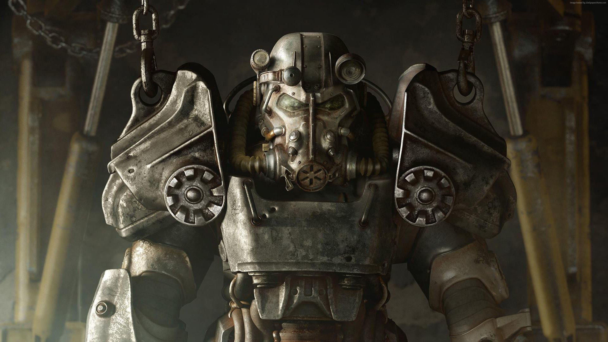

Now as you can probably guess, there are people who agree
and people who disagree on whether the Institute belongs
in the Commonwealth. Immediately upon meeting the Brotherhood
of Steel, you will know that they do not tolerate the
Institute and their practices.
The dynamic of the Brotherhood
of Steel (BOS) is more military-like, with ranks and all. They
seek to acquire pre-war technologies and fight for the good of
the Commonwealth. Most notably, they are identified by their
power armor.

This is a power armor suit mainly used by the Brotherhood of Steel.
Timber Michaud
Web Development Final Project (May 2024)